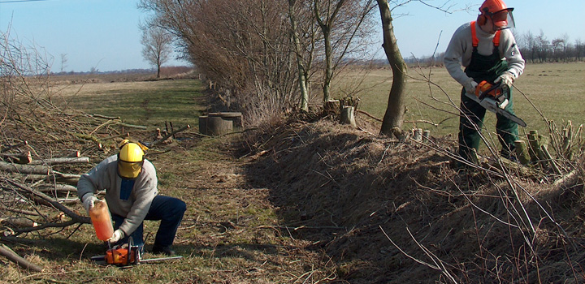
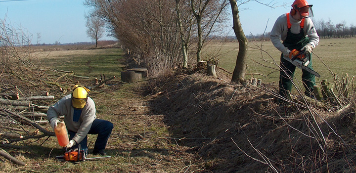

Wir bieten Ihnen unsere Unterstützung bei der Grundstückgestaltung. Planungsarbeiten, Begrünung, Pflasterarbeiten u.v.m
Wir bieten Ihnen unsere Dienste bei Forstarbeiten an.
Wir füren Baumarbeiten, wie Baumfällungen, Hecken- und Kronenschnitt oder Schredderarbeiten durch.
Maschineneinsatz wie Bagger, Radlader, Forwarder ist mit uns kein Problem.
Außerdem können Sie bei uns auch Motorsägenseminare & Schulungen erhalten.
Zusätzlich bieten wir Winterdienstarbeiten im privaten Bereich.
Wir führen Forst- und Baumarbeiten, wie Baumfällungen, Holzerntemaßnahmen, Hecken- und Kronenschnitt sowie Holzrückarbeiten durch. Zu unseren Dienstleistungen im Forstbereich gehören auch Maßnahmen wie Kulturbegründungen, Baum-Beurteilung und -Gutachten.
Im privaten Bereich können Sie unsere Dienstleistungen zur Grundstücksgestaltung wie Erstellung von Rasen- und Teichanlagen, Erdarbeiten, Pflasterarbeiten für Gehwege, Terrassen und Einfahrten, Zaunbau, Begrünung oder Montagearbeiten aller Art. Auch Winterdienstarbeiten bieten wir im privaten Bereich an.
Des Weiteren bieten wir Ihnen in gegebenen Fällen qualifizierten Maschineneinsatz wie Bagger, Minibagger, Radlader, Forwarder, Schredder und vieles mehr. Außerdem führen wir Motorsägensemniare und Schulungen mit Erteilung und Ausstellung eines Befähigungsnachweises durch.
Sie können sich auf den Einsatz versierter Mitarbeiter (Maurer, Elektriker, Gärtner, Forst- und Landwirte) verlassen.